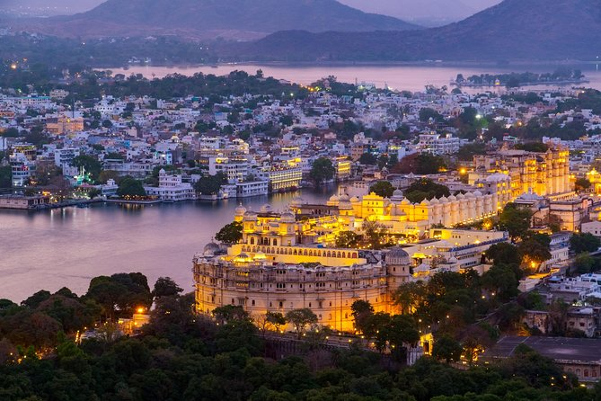

Udaipur-Travel Guide: Best Places to Visit
Welcome To The City Of Lakes ! | June 24,2024

Wanderlust Journeys
Welcome To The City Of Lakes ! | June 24,2024
Udaipur is a city in the north-western Indian state of Rajasthan, about 415 km (258 mi) south of the state capital Jaipur. It is also known as the City of Lakes, as it is surrounded by five major artificial lakes.The city is located in the southernmost part of Rajasthan, near the Gujarat border.Udaipur was founded in 1553 by Maharana Udai Singh II as the new capital of Mewar Kingdom. It is located in the fertile, circular Girwa Valley to the southwest of Nagda, which was the first capital of Mewar. It is surrounded by the Aravali Range, which separates it from the Thar Desert. It is placed close to the median point between two major Indian metro cities, around 660 km from Delhi and 800 km from Mumbai. Often referred to as the 'Venice of the East', the city of lakes Udaipur is located around azure water lakes and is hemmed in by lush green hills of Aravallis. The famous Lake Palace, located in the middle of Lake Pichola is one of the most beautiful sights of Udaipur. It is also home to Jaisamand Lake, claimed to be the second largest man-made sweet water lake in Asia. The beautiful City Palace and Sajjangarh (Monsoon Palace) add to the architectural beauty and grandeur of the city. The city is also known for its profusion of zinc and marble. Solar observatory in Lake Fateh Sagar is the only observatory in India located on an island and has been made on the pattern of Big Bear Lake in Southern California. The ten-day Shilpgram Festival which starts from 21 Dec to 30 Dec pulls in a large number of people interested in arts and crafts. Udaipur city has a hot semi-arid climate. The three main seasons, summer, monsoon and winter respectively, dominate the city of Udaipur. Being located in the desert lands of Rajasthan, the climate and weather of Udaipur is usually hot. The summer season runs from mid-March to June and touches temperature ranging from 23 °C (73 °F) to 44 °C (111 °F) in the months of March to June. Monsoons arrive in the month of July heralded by dust and thunderstorms. With its greenery and lakes, the city is one of the top monsoon destinations of the country. The winter season prevails from the month of October till the month of March. Humidity, which prevails during monsoons, diminishes at the arrival of winters. The city observes pleasant sunny days and enjoyable cool nights with the temperature ranging from 5 °C (41 °F) to 30 °C (86 °F). Udaipur's monsoon and winter climates are the most appealing time to visit. Tourists arrive in large numbers, anytime between mid-September to late March or early April. Even in January, the coldest month, the days are bright, sunny and warm with maximum temperature around 28.3 °C (82.9 °F). Mornings, evenings and nights are cold.


City Palace (Raj Mahal), Udaipur is a palace complex situated in the city of Udaipur in the Indian state of Rajasthan. It was built over a period of nearly 400 years, with contributions from several rulers of the Mewar dynasty. Its construction began in 1553, started by Maharana Udai Singh II of the Sisodia Rajput family as he shifted his capital from the erstwhile Chittor to the newfound city of Udaipur. The palace is located on the east bank of Lake Pichola and has several palaces built within its complex. A majestic architectural marvel towering over the lake on a hill surrounded by crenelated walls, it is a conglomeration of courtyards, pavilions, terraces, corridors, rooms and hanging gardens. The main entrance is through the triple arched gate, the "Tripolia" with eight marble porticos, The Maharanas were weighed under the gate in gold, the equivalent amount of which was distributed among the populace. The surajgokhada, the balcony of the sun, is where the SuryanshiMaharanas of Mewar presented themselves to the people in the time of trouble to restore their confidence. The 'MorChowk' known for its exquisite peacock mosaics in glass and the 'ChiniChitrashala' noted for its blue and white ceramics are other attractions in the palace. A high tech sound and light show is conducted every evening at the magnificent ManakChowk which brings alive the rich history of Mewar. The palace of Udaipur is a glorious symbol of Mewar.


The Monsoon Palace, also known as the Sajjan Garh Palace, is a hilltop palatial residence in the city of Udaipur, Rajasthan in India, overlooking the Fateh Sagar Lake. It is named Sajjangarh after Maharana Sajjan Singh (1874-1884) of the Mewar dynasty, whom it was built for in 1884. The palace offers a panoramic view of the city's lakes, palaces and surrounding countryside. It was built chiefly to watch the monsoon clouds; hence, appropriately, it is popularly known as Monsoon Palace. It is said that the Maharana built it at the top of the hill to get a view of his ancestral home, Chittorgarh. Previously owned by the Mewar royal family, it is now under the control of the Forest Department of the Government of Rajasthan and has recently been opened to the public. The palace provides a beautiful view of the sunset. Its builder, Maharana Sajjan Singh, originally planned to make it a five-storey astronomical centre. The plan was cancelled with Maharana Sajjan Singh's premature death. It was then turned into a monsoon palace and hunting lodge. High in the Aravalli Hills, just outside Udaipur, the palace is illuminated in the evenings, giving a golden orange glow. The palace appeared in the 1983 James Bond film Octopussy as the residence of Kamal Khan (Portrayed by Louis Jourdan), an exiled Afghan prince.


Fateh Sagar Lake is situated in the city of Udaipur in the Indian state of Rajasthan. It is an artificial lake named after Maharana Fateh Singh of Udaipur and Mewar, constructed north-west of Udaipur, to the north of Lake Pichola in the 1680s.It is one of the four lakes of the Udaipur city; the other three being: the Lake Pichola (within the Udaipur town), Udai Sagar Lake, 13 kilometres (8.1 mi) to the east of Udaipur, and Dhebar Lake or Jaisamand Lake, 52 km (32 mi) south east of Udaipur. Within the confines of the Fatah Sagar Lake, there are three small islands; the largest of these is the Nehru Park (4 km sq (1.5 sq mi) area), which is a popular tourist attraction, the second island (0.06 km2 or 15 acres area) houses a public park with an impressive water-jet fountain, and the third island (1.2 km sq area) is the address for the Udaipur Solar Observatory (USO). The Nehru park is accessible by inboard motor boats. The blue waters of the lake and the backdrop of the green mountains has given the soubriquet "the second Kashmir" to Udaipur . Udaipur Lake Conservation Society's reports indicate that the lake supports and sustains ground water recharge, drinking water, agricultural use, industrial use, ecological water availability and provides employment to 60% population of Udaipur.


Lake Pichola, situated in Udaipur city in the Indian state of Rajasthan, is an artificial fresh water lake, created in the year 1362, named after the nearby Picholi village. It is one of the several contiguous lakes, and developed over the last few centuries in and around the famous Udaipur city. The lakes around Udaipur were primarily created by building dams to meet the drinking water and irrigation needs of the city and its neighbourhood. Two islands, Jag Niwas and Jag Mandir are located within Pichola Lake, and have been developed with several palaces to provide views of the lake.
There are four islands on the lake:
- Jag Niwas, where the Lake Palace is built.
- Jag Mandir, with the palace of the same name.
- Mohan Mandir, from where the king would watch the annual Gangaur festival celebration.
- Arsi Vilas, small island which was an ammunition depot, but also a small palace. This one was built by one of the Maharanas of Udaipur to enjoy the sunset on the lake. It is also a sanctuary catering to a variety of birds, including tufted ducks, coots, egrets, terns, cormorants and kingfishers.
Three of the numerous lakes found in the vicinity of Udaipur which connect with the Pichola lake and the Swaroop Sagar Lake connected by an arched bridge built by Maharana Swaroop Singh (1842-1861) which in turn connects to the Fateh Sagar Lake, the crystal watered lake in the midst of tree lined hills and the smaller Arsi Vilas.Lake Pichola is approachable by road from Udaipur City. Local buses, Tongas, auto-rickshaws and taxis provide the needed transport. The lake is adjacent to the Bagore Ki Haveli museum, making it a good landmark.